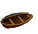
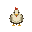
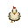
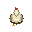
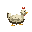
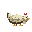
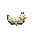

Prévia de arte exportada, sem Unity. Barco76×68: quatro quadros de1.25s, movimento vertical limitado a1pixel da posição base, ciclo5s e popa preservada.

Arte original32×32. Pés em(16,6)de origem inferior esquerda. Frente: olhos e bico; costas: nuca sem rosto e cauda; lateral direita, espelhável para esquerda. As passadas alternam contato e recuperação, a bicada inclina a cabeça até o chão e o repouso recolhe os pés.







Ordem zero-based: idle0–1; walk_down2–5; walk_up6–9; walk_side10–13; peck14–16; rest17–18. Sheet608×32, JSONarray, fullrect e semtrim. Os GIFs individuais mostram cada ciclo separado.
Verificados: nativos reabertos, canvas, contagem, duraçãoJSON/GIF, alpha binário e barco idêntico à fonte deslocada0/−1/0/+1pixel vertical. Inspeção visual por poses; playback contínuo observado pelo executor e validação Unity:NOT RUN. Proporção e leitura em cena dependem da integração. Manifesto.